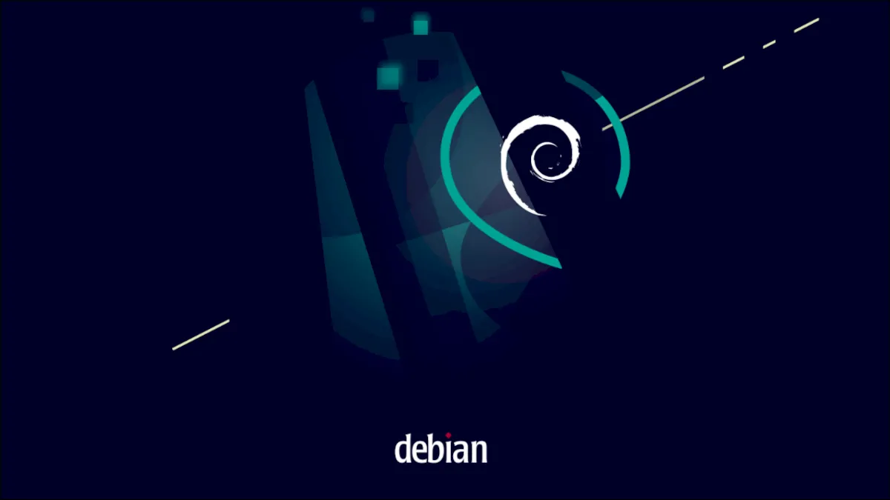

- Software de sistema
- Software de aplicação
- Software de progamação
- Software de segurança
- Software de bases de dados
- Software de redes
- Software educacional
- Software de entreterimento
- Software de gestão empresarial
- Software de design assistido por computador (CAD)
O que é um software?
Software é um conjunto de instruções que devem ser seguidas e executadas por um mecanismo, seja ele um computador ou um aparato eletromecânico. É o termo usado para descrever programas, apps, scripts, macros e instruções de código embarcado diretamente (firmware), de modo a ditar o que uma máquina deve fazer.
Software de sistema
Quais são os softwares de sistema? O que é software? Entenda o conceito e como funciona [+6 tipos] Os softwares de sistema são os responsáveis pelos sistemas operacionais de todos os dispositivos e auxiliam os usuários em seu uso, de forma visual e através de comandos. São extremamente complexos em sua construção.
Windows, Android, iOS.

Software de aplicação
O software de aplicão é criado, em regra, para executar tarefas específicas tal como o processamento de texto, reprodução de áudio. Ao contrário do software de sistema, estas tarefas não são indispensáveis ao normal funcionamento do computador e que só são executa- das a pedido do utilizador.
Microsoft Word, Spotify, Calculadora, Instagram, TikTok.
Software de progamação
Trata-se do conjunto de ferramentas que permitem ao desenvolvedor criar e editar outros softwares, utilizando linguagens de programação
(C, Java, Python, Swift, etc.)
Software de segurança
Trata-se de uma classe de sistemas que age na identificação, na prevenção e no bloqueio de possíveis invasões, a partir dos códigos maliciosos.
Segurança nacional. Direção defensiva. Segurança da informação / computador. Segurança pública. Segurança pessoal. Segurança privada. Segurança condominial.
Software de bases de dados
O software de banco de dados às vezes também é conhecido como "sistema de gerenciamento de banco de dados" (DBMS). O software de banco de dados simplifica o gerenciamento de dados, permitindo que os usuários armazenem dados em um formulário estruturado e depois os acessem.
Tipos de software e o seu objetivo? Software aplicativo. São aplicações projetadas para resolver problemas específicos dos usuários. Software de programação. ... Software de sistema. ... Software livre. ... Software proprietário. ... Software freeware.
Software de redes
Software de rede é um termo extremamente amplo para uma gama de softwares voltados ao design e implementação de redes modernas. Vários tipos de software de rede suportam a criação, calibração e operação de redes.
São exemplos típicos de dispositivos de rede: switches; roteadores; concentradores; repetidores; adaptadores de rede; modem; gateway; bridge;
Software educacional
O software educacional é uma solução completa para instituições de ensino de todos os portes e segmentos. Trata-se de um sistema que oferece controle total sobre as atividades da instituição e de seus colaboradores.
Tipos de software e o seu objetivo? Software aplicativo. São aplicações projetadas para resolver problemas específicos dos usuários. Software de programação. ... Software de sistema. ... Software livre. ... Software proprietário. ... Software freeware.
Software de entreterimento
Software de entretenimento é qualquer software que apóie um hobby ou forneça uma forma de diversão. O software de entretenimento inclui videogames, vídeos e qualquer outro software que o usuário considere agradável.
Digital: 5 tipos de entretenimento online que vieram para ficar Séries e Filmes. ... Música e Podcasts. ... Casinos Online. ... Desporto e Apostas Desportivas. ... Cursos e Compras.
Software de gestão empresarial
Um software de gestão empresarial é um sistema informatizado composto de diversos módulos relacionados aos processos operacionais, administrativos e gerenciais de uma organização, que integra de forma inteligente e centralizada os dados referentes a todas as operações diárias de uma empresa.
o ERP e o CRM
Software de design assistido por computador (CAD)
CAD, ou projeto e desenho auxiliados por computador (CADD), é uma tecnologia para design e documentação técnica que substitui o desenho manual por um processo automatizado.
programas computacionais de desenho técnico.
Windows 1.0
A história começa antes dele, no MS-DOS. Em 1981, a Microsoft iniciou o desenvolvimento de um software de interface gráfica, que posteriormente veio a se tornar o Windows. Quando finalmente lançado, em 20 de novembro de 1985, o Windows 1.0 era apenas um software de interface bidimensional para facilitar o uso do sistema operacional de computadores IBM da época.
Windows 2.0
A maior atualização do software, o Windows 2.0, chegou em 1987 e seguia a mesma proposta de ser um complemento com interface gráfica para o MS-DOS. A maior novidade? Sobreposição de janelas, recurso indisponível na versão anterior.
Windows 3.x
Três anos depois, o Windows 3.0 foi lançado. Foi o primeiro sucesso da Microsoft em interface gráfica — que ainda rodavam sobre o MS-DOS. Dessa vez, no entanto, era ainda mais claro que a competição com a Apple era o foco.
Windows 95
Foi no Windows 95 que a Microsoft abriu mão do MS-DOS para colocar a interface gráfica em primeiro plano no sistema operacional. A clássica edição do SO foi lançada em agosto de 1995 e era totalmente nova, significativamente diferente das versões anteriores.
Windows 98
Seguindo a janela de atualização de três anos, o Windows 98 foi lançado em 1998. Os avanços foram diretamente relacionados ao Windows 95, mas não foram lá tão significativos.

Windows ME
Posteriormente, a sequência numérica foi substituída pelo ME, acrônimo para Millenium Edition, na versão do Windows lançada em 2000. O software introduziu algumas melhorias menores ao sistema operacional, e oferecia um boot mais rápido que os anteriores, mas ele não contava com retrocompatibilidade com os programas baseados no MS-DOS, que ainda eram fundamentais para os usuários
Windows XP
Em 2001, a Microsoft botou no mundo o Windows XP. A sigla XP é derivada da palavra “eXPerience”. Uma das suas principais diferenças estava na interface — totalmente retrabalhada nessa versão. Foram embora os formatos quadrados e efeitos tridimensionais em tons de cinza, e uma paleta novamente colorida tomou o seu lugar.
Windows Vista
Caminhando para as versões mais recentes do Windows, o Vista foi um dos fiascos mais conhecidos da Microsoft. Visualmente, ele era totalmente novo, graças à nova interface gráfica conhecida como Windows Aero. O sistema operacional foi lançado cinco anos após o Windows XP, em janeiro de 2007.

Windows 7
Dois anos depois, em 2009, o Windows 7 chegou à festa. Com o mesmo Windows Aero na interface, ele era uma versão infinitamente mais refinada que o Vista, mas sem grandes ambições ou promessas. O foco era ser mais limpo, eficiente e prático de usar — pontos importantes destacados como falhas no antecessor.
Windows 8
Se a Microsoft tinha um vício de alternar entre erros e acertos, o Windows 8 foi mais uma comprovação desse ciclo. O sistema operacional apostava em uma pegada mobile para os computadores, em uma tentativa da Microsoft de unificar as experiências entre PC e os portáteis.

Windows 8.1
Não demorou muito até que a Microsoft corresse atrás de um paliativo. O Windows 8.1, uma das maiores atualizações do SO, serviu nesse processo e trouxe de volta o botão Iniciar, colocou a área de trabalho como tela padrão após a inicialização e a exibição de aplicativos, antes limitados somente a dois por vez, foi ampliado para quatro.
Windows 10
Daí, para concretizar os acertos, chegou o Windows 10 em 2015. A Microsoft apostou firme no sistema operacional, tanto que encorajava usuários dos Windows 7 e 8 a migrarem com uma atualização gratuita. Ele melhorou a interface Windows Metro, consolidou a recuperação do Menu Iniciar em sua totalidade (mas modernizado) e proporcionou uma experiência agradável tanto para usuários de mouse e teclado quanto telas sensíveis ao toque.
1 – Ubuntu
O Ubuntu é sem dúvida nenhuma, a distribuição linux mais usada e também a que maior influencia devido ao fato de ser uma das distribuições mais amigáveis e mais fáceis de instalar, usar e também de ser a distribuição mais fácil de se instalar programas e de se obter ajuda para resolver problemas.
2 – Mint
O Linux Mint é uma das distribuições Linux preferidas dos usuários iniciantes no Linux e também é considerada um das distribuições mais fáceis de usar.
3 – Debian
Debian é uma das distribuições mais estáveis e muitas distribuições linux tem o Debian como base. No Debian, cada pacote para por inúmeros testes até ser considerado estável.
4 – Fedora
Apesar de não ser tão fácil de usar quanto as distribuições Ubuntu e Mint, é uma distribuição relativamente fácil de usar mas os iniciantes podem ter um pouco de dificuldade. De qualquer forma é uma ótima distribuição e é patrocinada pela Red Hat.
5 – OpenSuse
Muito usado em servidores, seu gerenciador de pacotes é o Yast.
6 – Red Hat Enterprise Linux
É uma distribuição Linux comercial voltada para empresas e é muito usada em servidores e em datacenters.
7 –É uma distribuição Linux comercial voltada para empresas e é muito usada em servidores e em datacenters.
É construída usando o mesmo código do Red Hat Enterprise Linux mas é gratuita, não possui os logotipos oficiais da Red Hat e também não possui suporte da empresa. Fora isso, o sistema é identico ao Red Hat Enterprise Linux.
8 – Slackware
Criada em 1993 por Patrick Volkerding, Slackware é a mais antiga distribuição Linux ainda em atividade. O Foco dessa distribuição é simplicidade e estabilidade. Seu objetivo é manterse fiel ao padrão UNIX.
9 – Arch Linux
É uma distribuição do tipo rolling release, minimalista e otimizada para processador i686. O seu gerenciador de pacotes é o Pacman. É uma distribuição difícil de ser instalada por usuários iniciantes ou intermediários,
10 – Gentoo
O principal diferencial dessa distribuição é o fato de os seus pacotes não serem pré-compilados, todos os pacotes são compilados para o hardware do sistema, obtendo assim maior velocidade do que seria possível em outras distribuições. É uma distribuição voltada apenas para usuários avançados.
11 – Mageia
Ocupando o lugar que seria da Mandriva, Mageia é uma distribuição Linux francesa criada por ex colaboradores da Mandriva que criaram uma Organização sem fins lucrativos após uma série de demissões que ocorreram antes da falência da empresa.
12 – Backtrack / Kali Linux
O Kali é a distribuição mais usada entre as distribuições Linux voltadas para testes de penetração e para analisar a segurança de sistemas e redes de computadores. Para aprender como fazer Pentest usando o Kali Linux, conheça esse curso online. Fontes: distrowatch.com